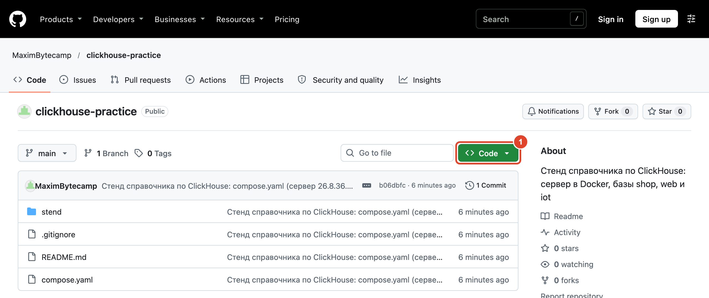
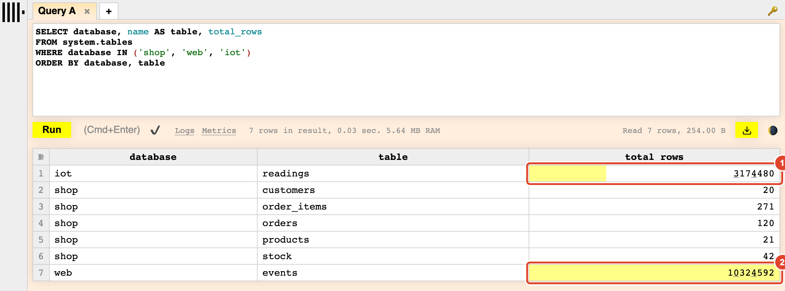

Стенд
Сервер ClickHouse с заранее загруженными данными, одинаковый у всех. На нём выполняются примеры книги.
Примерконтейнер course-clickhouse с базами shop, web, iot и sandbox.
Гдеглава 0.1
Справочник по ClickHouse · модуль 0 · рабочее место
Глава 0.1
Поднимем у вас тот же сервер ClickHouse с готовыми базами, на котором сняты все примеры книги. Пять шагов, около 15 минут, и дальше запросы из глав будут давать у вас те же числа, что в книге.
github.com/MaximBytecamp/clickhouse-practice — стенд и базы
Суть за две минуты
Для Windows сервер ClickHouse не выпускают. Docker даёт ему маленький Linux в коробке, и коробка одинаково запускается на Windows, macOS и Linux.
Коробку называют контейнером.
docker compose up -d поднимает сервер и сама загружает в него базы.
Данные лежат отдельно от коробки и не пропадают при перезапуске.
В web.events должно быть 10 324 592 строки, в iot.readings — 3 174 480.
Совпали — у вас стенд как у всех.
Зачем это знатьЧтобы понимать, что вы запускаете и почему ваши числа совпадут с книгой.
Стенд — это сервер ClickHouse с уже загруженными данными. У всех студентов он одинаковый: та же версия, те же таблицы, те же строки. Если ваш ответ не сходится с книгой, ищите ошибку в запросе — данные точно те же.
Docker запускает программу в контейнере — отдельной коробке со своим Linux. Контейнер делают по образу — готовому шаблону. Образ лежит на диске и не меняется, контейнер работает. Поэтому сервер у всех один и тот же, на любой системе.
Что есть что: диск — образ clickhouse/clickhouse-server:26.8.36.3; программа — контейнер course-clickhouse; флешка — том clickhouse-data с файлами баз.
Зачем это знатьЧтобы видеть картину целиком: что запустит Docker и чем вы будете с ним работать.
Весь стенд описан в одном файле compose.yaml. Docker читает его и поднимает всё, что там перечислено:
docker compose и clickhouse-clientDocker · проект clickhouse-practice
том clickhouse-data — файлы баз; переживает остановку и удаление контейнеров
course-clickhouse — сам сервер. Работает всё время, пока стенд поднят.seed — загрузчик. Заполняет пустой сервер базами и выключается.Зачем этот шагБез Docker коробку с сервером запустить нечем. Ставим его один раз и проверяем, что он отвечает.
Делаем
Docker.dmg и перетащите Docker в «Программы».curl -fsSL https://get.docker.com -o get-docker.sh sudo sh get-docker.sh sudo usermod -aG docker $USER
docker. Без нового входа она не действует, и каждую команду пришлось бы начинать с sudo.
Проверьте, что Docker отвечает:
docker version
в ответе есть оба блока: Client и Server. Если вместо Server ошибка подключения — Docker Desktop не запущен: запустите его и дождитесь Engine running.
Client: Version: 29.7.2 API version: 1.55 Go version: go1.26.5 Git commit: a7dcaa6 Built: Wed Aug 5 18:27:50 2026 OS/Arch: darwin/arm64 Context: desktop-linux Server: Docker Desktop 4.89.0 (238018) Engine: Version: 29.7.2 API version: 1.55 (minimum version 1.40) Go version: go1.26.5 Git commit: 6a43e3d Built: Wed Aug 5 18:28:35 2026 OS/Arch: linux/arm64 Experimental: false containerd: Version: v2.3.3 …
Посмотрите на строки OS/Arch. У клиента darwin/arm64 — это macOS. У движка linux/arm64 — это тот самый Linux, который Docker даёт контейнерам на любой системе. На Windows у клиента будет windows/amd64, а у движка всё равно linux/….
Зачем этот шагВ репозитории лежит описание стенда — compose.yaml — и скрипты загрузки баз. Без него Docker нечего поднимать.

git clone. Если Git нет — нажмите Download ZIP (рамка 2) и распакуйте архив.

compose.yaml.git clone https://github.com/MaximBytecamp/clickhouse-practice.git cd clickhouse-practice
cd $HOME\Downloads\clickhouse-practice-main\clickhouse-practice-main
cd ~/Downloads/clickhouse-practice-main
команда ls (на Windows можно dir) показывает compose.yaml, README.md и папку stend.
GitHub добавляет к имени папки название ветки — -main. А «Извлечь всё» на Windows ещё и кладёт папку в папку с тем же именем, поэтому в пути она встречается дважды. Нужно оказаться в той папке, где лежит compose.yaml.
Зачем этот шагОдна команда скачивает сервер, запускает его и загружает базы. После неё стенд работает в фоне.
Делаемdocker compose up -d
По словам: up — «поднять всё из compose.yaml», -d — «в фоне», чтобы терминал освободился. Первый раз дольше: Docker скачивает образ, около 270 МБ.
✔ Volume clickhouse-practice_clickhouse-data Created 0.0s ✔ Network clickhouse-practice_default Created 0.0s ✔ Container course-clickhouse Created 0.2s ✔ Container clickhouse-practice-seed-1 Created 0.2s ✔ Container course-clickhouse Healthy 10.9s ✔ Container clickhouse-practice-seed-1 Started 10.9s
За шестью строками — четыре события. Каждое начинается, только когда закончилось предыдущее:
Порядок держится на третьем шаге. Docker каждые 3 секунды спрашивает сервер «ты жив?» (SELECT 1). Первый ответ — статус Healthy, «здоров». Только после этого стартует загрузчик: грузить данные в неготовый сервер бессмысленно.
Строка Started значит «загрузчик начал». Сама загрузка идёт ещё 20–30 секунд. Дождитесь её конца:
docker compose logs seed
последняя строка журнала — Готово: базы shop, web, iot и пустая sandbox. Нет её — подождите полминуты и повторите команду.
seed-1 | shop.products 21 строк seed-1 | shop.stock 42 строк seed-1 | shop.customers 20 строк seed-1 | shop.orders 120 строк seed-1 | shop.order_items 271 строк seed-1 | web.events: генерация, около минуты… seed-1 | web.events 10324592 строк seed-1 | iot.readings: генерация… seed-1 | iot.readings 3174480 строк seed-1 | Готово: базы shop, web, iot и пустая sandbox
Какие контейнеры работают, показывает docker compose ps:
docker compose ps
NAME SERVICE CREATED STATUS PORTS course-clickhouse clickhouse 53 seconds ago Up 52 seconds (healthy) 0.0.0.0:8123->8123/tcp, 0.0.0.0:9000->9000/tcp
Контейнер в списке один — сервер. Загрузчик сделал своё дело и выключился. В столбце STATUS — healthy, в PORTS — два открытых порта, 8123 и 9000. Запись 0.0.0.0:8123->8123 читается так: «порт 8123 компьютера ведёт в порт 8123 контейнера».
При следующем docker compose up -d загрузчик увидит, что заказы в shop.orders уже есть, напишет «Базы уже загружены» и ничего не тронет. Ваши упражнения переживают перезапуск.
Зачем это знатьНа этих базах построены все примеры книги. Полезно сразу понимать, где маленькие таблицы, а где миллионы строк.
shopМагазин электроники: товары, склады, покупатели, заказы. Первые запросы, модули 1–2.
webДействия посетителей сайта того же магазина за август–октябрь 2026: просмотры, поиск, корзина, покупки.
iotТемпература и влажность на четырёх складах, замер раз в минуту за те же три месяца.
sandboxПустая песочница для упражнений: создавайте, вставляйте, удаляйте — эталонные базы не пострадают.
Полоски — в одном масштабе: web.events почти в 22 тысячи раз больше всего магазина. На таких объёмах и видна скорость ClickHouse.
| База | Таблица | Строк |
|---|---|---|
shop | products — товары | 21 |
stock — остатки на складах | 42 | |
customers — покупатели | 20 | |
orders — заказы | 120 | |
order_items — позиции заказов | 271 | |
web | events — действия на сайте | 10 324 592 |
iot | readings — замеры датчиков | 3 174 480 |
Магазин тот же, что в справочнике по MongoDB, только каждый заказ разложен на строку заказа и строки позиций. Таблиц web.events и iot.readings нет в репозитории готовыми файлами — это сотни мегабайт. Загрузчик вычисляет их прямо на сервере: каждое значение получается из номера строки по формуле, поэтому у всех выходит одинаково до последней цифры.
Зачем этот шагУбедиться своими глазами, что всё загрузилось. Сервер сам отдаёт страницу для запросов — Play UI, ставить ничего не нужно.
Делаемhttp://localhost:8123. Впишите пользователя student и пароль student.

SHOW DATABASES и нажмите Run (4) или Ctrl + Enter (на Mac — Cmd + Enter). Значок с базами слева открывает их список; щелчок по базе показывает её таблицы.

SELECT database, name AS table, total_rows
FROM system.tables
WHERE database IN ('shop', 'web', 'iot')
ORDER BY database, table
в рамках 1 и 2 те же числа: 3174480 у iot.readings и 10324592 у web.events. Значит, стенд готов.
SHOW DATABASES вернул восемь баз. Четыре — наши: iot, sandbox, shop, web. Остальные четыре есть на любом сервере ClickHouse:
system — сведения о самом сервере;default — база по умолчанию;INFORMATION_SCHEMA и information_schema — стандартное описание таблиц, как в других SQL-базах.Проверочный запрос берёт список таблиц из служебной базы system и для каждой показывает число строк. Сейчас нужен только его результат. Полосы в столбце с числами Play UI рисует сам: чем больше число, тем длиннее полоса. Над результатом он пишет, сколько строк вернулось и за сколько секунд.
Зачем этот шагВторой способ задавать запросы — из терминала, программой clickhouse-client. Она уже лежит в контейнере сервера, Docker запускает её там.
Делаемdocker compose exec clickhouse clickhouse-client
Появится приглашение course :). Наберите по очереди, каждый раз нажимая Enter:
SHOW DATABASESSELECT count() FROM web.events — посчитать строкиexit — выйтиКлиент запускается в той же коробке, что и сервер, поэтому адрес сервера для него — localhost, «этот же компьютер». Пароль вводить не нужно: стенд заранее записал его в настройки клиента.
после второго запроса клиент напечатал 10324592. Ответ пришёл за 0,014 секунды.
ClickHouse client version 26.8.36.3 (official build). Connecting to localhost:9000 as user student. Connected to ClickHouse server version 26.8.36. Warnings: * Delay accounting is not enabled, OSIOWaitMicroseconds will not be gathered. You can enable it using `sudo sh -c 'echo 1 > /proc/sys/kernel/task_delayacct'` or by using sysctl. * Linux transparent hugepages are set to "always". Check /sys/kernel/mm/transparent_hugepage/enabled course :) SHOW DATABASES SHOW DATABASES Query id: 2110de2e-e6f7-42e6-b51b-2b11fa513ab4 ┌─name───────────────┐ 1. │ INFORMATION_SCHEMA │ 2. │ default │ 3. │ information_schema │ 4. │ iot │ 5. │ sandbox │ 6. │ shop │ 7. │ system │ 8. │ web │ └────────────────────┘ 8 rows in set. Elapsed: 0.006 sec. course :) SELECT count() FROM web.events SELECT count() FROM web.events Query id: d045ac73-50b0-4b58-9a24-47974f87a685 ┌──count()─┐ 1. │ 10324592 │ -- 10.32 million └──────────┘ 1 row in set. Elapsed: 0.014 sec. course :) exit Bye.
student).course :) — имя сервера и смайлик. После него набирают запрос.Query id — номер запроса, по нему его потом можно найти в журнале сервера.-- 10.32 million клиент добавляет к большим числам сам.Команда docker compose exec clickhouse clickhouse-client читается так: «выполни внутри работающего контейнера сервиса clickhouse программу clickhouse-client». Пользователя и пароль стенд заранее положил в настройки клиента. exit закрывает только клиент, сервер продолжает работать.
Зачем это знатьБраузер работает на вашем компьютере, а сервер — внутри коробки. Разберёмся, как запрос проходит внутрь: так же будут ходить запросы ваших программ.
localhost:8123 — на порт 8123 вашего же компьютера.Что есть что: офис — компьютер; добавочный номер — порт; секретарь — проброс порта в Docker; сотрудник — сервер ClickHouse; шкаф с папками — том с файлами баз.
Портов два, а сервер и данные одни. Различается только способ доставки запроса.
Зачем это знатьИспортили базы упражнением или нужно освободить место — четыре команды на все случаи. Под каждой видно, что после неё останется.
docker compose run --rm resetВернуть базы как в первый раз. Около 25 секунд.
docker compose stopОстановить сервер на время. Запуск — up -d.
docker compose downУбрать контейнеры и сеть.
docker compose down -vУбрать всё вместе с томом. Следующий up -d загрузит базы заново.
Сбрасывать базы стоит, если после упражнения числа перестали сходиться с книгой.
В reset слово run — «запустить разовую задачу», --rm — «удалить её контейнер сразу после окончания», чтобы они не копились. Флаг -v у down — от volume, «том»: он стирает файлы баз. Том удаляется последним:
Container course-clickhouse Stopping Container course-clickhouse Stopped Container course-clickhouse Removing Container course-clickhouse Removed Volume clickhouse-practice_clickhouse-data Removing Network clickhouse-practice_default Removing Network clickhouse-practice_default Removed Volume clickhouse-practice_clickhouse-data Removed
свободно 3 ГБ на диске и Docker выделено 2 ГБ памяти. Этого хватает с запасом.
Сразу после загрузки том почти вдвое больше: сервер удаляет промежуточные файлы через несколько минут. Две нижние полосы — одна таблица web.events: на диске 353 МБ, без сжатия было бы 1,37 ГБ. Сжатие уменьшает её почти вчетверо.
Памяти сервер в покое берёт около 700 МБ, загрузка баз добавляет до 460 МБ. Сколько он занимает прямо сейчас, покажет docker stats course-clickhouse, выход — Ctrl + C.
Найдите строку, похожую на то, что видите у себя, и раскройте её.
Команда docker есть, а движка нет. Запустите Docker Desktop и дождитесь Engine running. Не запускается — глава 0.1а.
Команда docker есть, а движка нет. Запустите Docker Desktop из «Программ» и дождитесь Engine running.
sudo systemctl start docker. Чтобы стартовала вместе с системой — sudo systemctl enable docker.
Закройте PowerShell и откройте заново: новое окно узнает про установленную программу.
Команду docker добавляет в систему первый запуск Docker Desktop. Запустите его и откройте новое окно терминала.
sudo usermod -aG docker $USER, затем выйдите из системы и войдите снова.
Docker ищет compose.yaml в текущей папке. Перейдите в папку репозитория — шаг 2.
Репозиторий скачан дважды, и первый стенд ещё работает. Остановите его из его папки (docker compose down) или работайте в прежней папке.
Порт 9000 занимают, например, PHP-FPM и MinIO. Создайте рядом с compose.yaml файл .env со строкой NATIVE_PORT=9001 (или HTTP_PORT=8124) и снова выполните docker compose up -d. Адреса из книги тогда меняйте на свой порт. На Windows сообщение заканчивается словами Only one usage of each socket address … is normally permitted.
Таблица уже создана, а строки ещё вычисляются. Дождитесь «Готово» в docker compose logs seed.
Пароль student — строчными латинскими буквами. Ключик справа вверху Play UI снова открывает поля входа. Так выглядит ошибка — красная рамка вместо таблицы:

У каждой ошибки ClickHouse есть номер (Code: 516) и имя (AUTHENTICATION_FAILED). По имени её легко найти в документации.
Стенд остановлен — командой stop или перезагрузкой компьютера. Выполните docker compose up -d.
Образ — неизменный шаблон с программой, его скачивают один раз. Контейнер — запущенная копия, созданная из образа; у него своё состояние, его можно остановить и удалить. Из образа clickhouse/clickhouse-server:26.8.36.3 стенд создаёт контейнер course-clickhouse, а загрузчик seed — второй контейнер из того же образа.
docker compose down и снова up -d упражнения в sandbox пропадут?Нет. down удаляет контейнеры, том остаётся, а данные лежат в нём. Новый контейнер подключит тот же том, а загрузчик увидит, что базы уже есть, и ничего не тронет. Данные стирают только down -v и reset.
seed не стартует одновременно с сервером?В compose.yaml загрузчик запускается только после статуса Healthy — когда сервер ответил на проверочный запрос. Сразу после запуска контейнера сервер ещё не принимает запросы, и загрузка упала бы с ошибкой подключения.
Один. Play UI приходит к нему через порт 8123 по протоколу HTTP, clickhouse-client — через порт 9000 по собственному протоколу ClickHouse. Сервер, базы и данные те же.
git clone https://github.com/
MaximBytecamp/clickhouse-practice.git
cd clickhouse-practice
docker compose up -d
docker compose logs seed # «Готово»
docker compose ps # healthy
http://localhost:8123/play
student / student
docker compose exec clickhouse clickhouse-client
docker compose run --rm reset
docker compose down # данные остаются
docker compose down -v # и данные удаляются
Сервер ClickHouse с заранее загруженными данными, одинаковый у всех. На нём выполняются примеры книги.
Примерконтейнер course-clickhouse с базами shop, web, iot и sandbox.
Гдеглава 0.1
Программа, которая запускает другие программы в изолированных контейнерах со своей системой Linux внутри. Работает на Windows, macOS и Linux одинаково.
Примерdocker version показывает клиента (darwin/arm64) и движок (linux/arm64).
Где§1, §3
Неизменный шаблон, в котором лежит программа со всем нужным для её работы. Скачивается один раз, из него создаются контейнеры.
Примерclickhouse/clickhouse-server:26.8.36.3, около 270 МБ при скачивании.
Где§1, §5
Запущенная копия программы из образа, отделённая от остальной системы. Его можно остановить, удалить и создать заново.
Примерcourse-clickhouse — сервер, работает всё время; seed — загрузчик, завершается сам.
Где§1, §2, §5
Папка с данными, которую Docker хранит отдельно от контейнера. Переживает остановку и удаление контейнера; стирается только явно.
Примерclickhouse-practice_clickhouse-data — файлы всех баз стенда; удаляется командой docker compose down -v.
Где§2, §10
Часть Docker, которая поднимает несколько контейнеров по описанию из файла compose.yaml: какие образы, порты, тома и в каком порядке.
Примерdocker compose up -d — поднять стенд, docker compose ps — что работает.
Где§2, §5, §10
Команда, которую Docker регулярно выполняет в контейнере, чтобы узнать, готова ли программа работать. Первый успешный ответ даёт статус healthy.
Примерраз в 3 секунды SELECT 1; у нас Healthy пришёл через 10,9 секунды.
Где§5
Порт — номер, по которому программа принимает соединения. Проброс — правило Docker: соединения на порт компьютера передаются в порт контейнера.
Пример0.0.0.0:8123->8123/tcp — порт 8123 компьютера ведёт в порт 8123 контейнера.
Где§5, §9
Веб-страница для SQL-запросов, встроенная в сервер ClickHouse. Работает в браузере, ставить ничего не нужно.
Примерhttp://localhost:8123/play, вход student / student.
Где§7
Программа для SQL-запросов в терминале. Подключается к серверу по порту 9000 и печатает результат таблицей в рамке.
Примерdocker compose exec clickhouse clickhouse-client, приглашение course :), выход — exit.
Где§8
shop, web, iot и песочницей sandbox.docker compose up -d из папки репозитория; базы загружает разовый контейнер seed.reset и down -v.web.events 10 324 592 строки, а в iot.readings — 3 174 480.Docker Desktop на Windows не запускается — следующая глава 0.1а. Всё работает — переходите к 0.2 о клиентах.